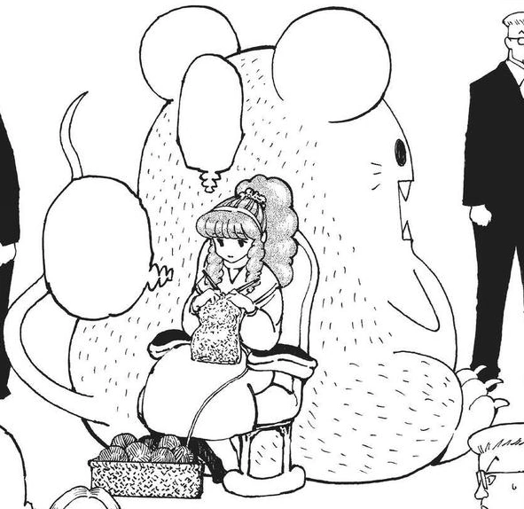
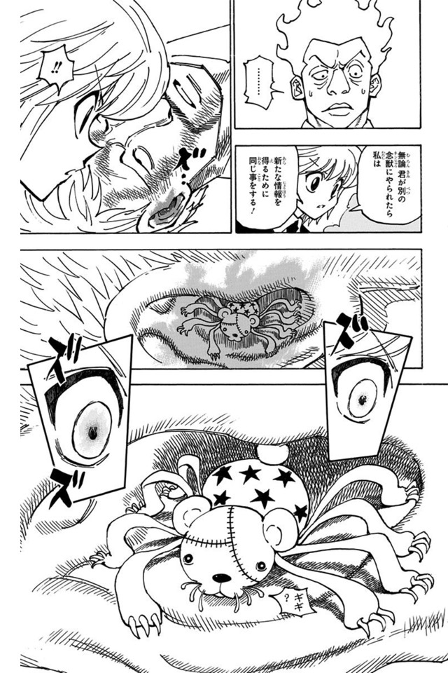

第12王子 モモゼ
- 登録名
- モモゼ＝ホイコーロ
- 分類
- 王子
- 初期配置（現在地ではありません）
- 第1層 1012号室
初期配置は台帳の当初の担当先です。後任の人物や復元枠も含み、全員の出航時の在室を示すものではありません。後の展開は下の折りたたみにまとめています。
詳細には後の展開を含みます。下の項目を開くと表示できます。
人物詳細（後の展開を含む）
- 状態
- 死亡（第368話時点）
- 所属
- カキン王国
- 母（王妃）
- 第七王妃セヴァンチ
- 最後の所在
遺体が最後に描かれた場面：第371話（場所は推定：多数の棺が放射状に並ぶ場所（名称・階層の表示なし））
場所を画像で確認できた記録はまだありません
- 念使用の確認
- 念使用：未確認（使用不可とは限りません）
- 念系統
- 未確認
- 念能力
- 本人固有の能力は未確認
- 守護霊獣
- ネズミのような外見のゆるキャラ風念獣
家族関係
- [親子] 第7王妃 セヴァンチ（母）
守護霊獣：モモゼの守護霊獣
- 外見・形態
- ネズミのような外見の、巨大なゆるキャラ風の念獣
- 守護霊獣の念系統
- 未確認
- 念能力
- サイールドは、念獣に「ヒマか」と問われて応じた後に体を操られたと証言する。ただし第360〜361話の提供画像では、その念獣の持ち主をモモゼと明示していない。モモゼの守護霊獣との対応、発動条件の全容は再照合が必要。


状態の経緯
- 第368話：死亡 — タフディーによる絞殺（セヴァンチによる殺害命令は未確認）（原作確認記録あり） 根拠の出来事
編集状況
- 人物ID：P12
- 状態の確認話数：第368話／根拠の出来事：E368-001（原作確認記録あり）
- 公開データの登録情報から生成したページです。個人メモ・編集内容・調査記録は含めません。
- 一覧の詳細でメモ・編集
情報源：公開人物台帳・公開出来事台帳。